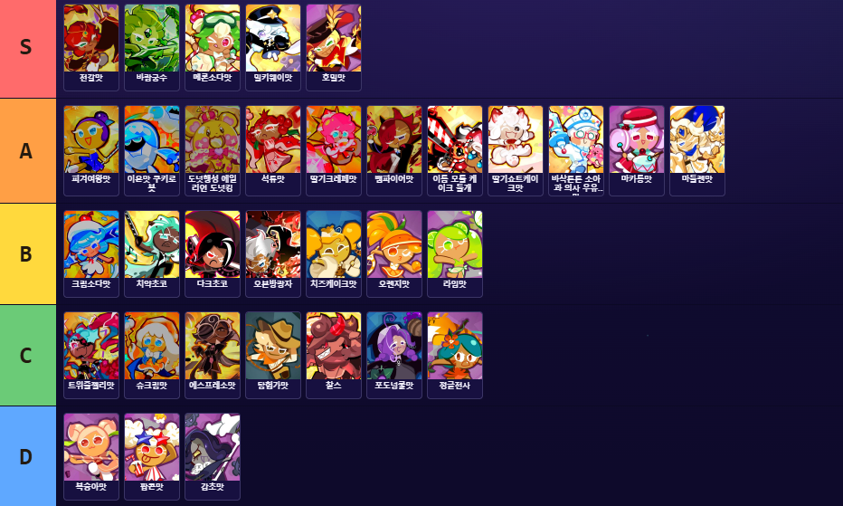
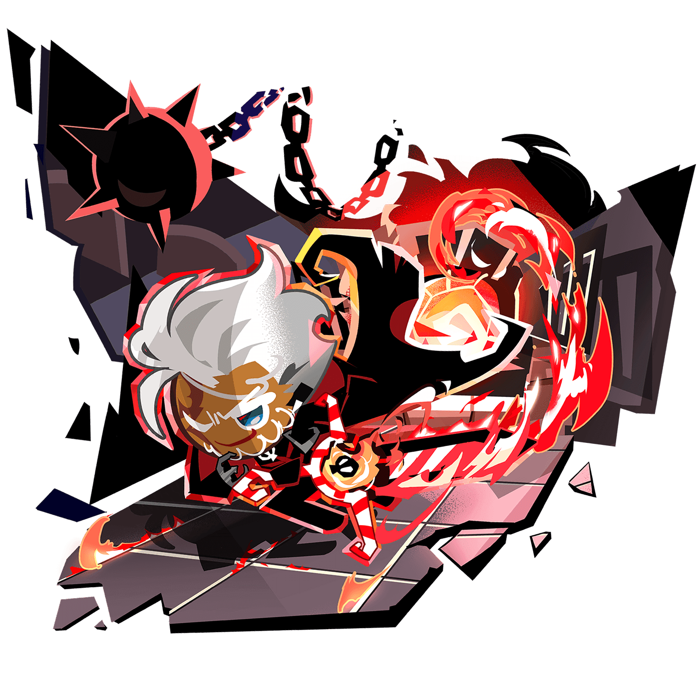
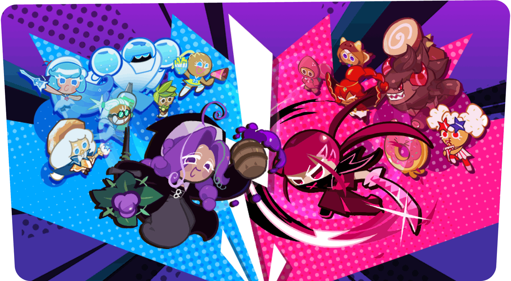
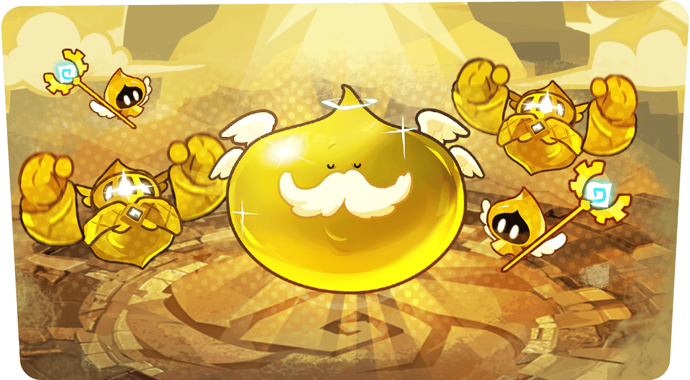
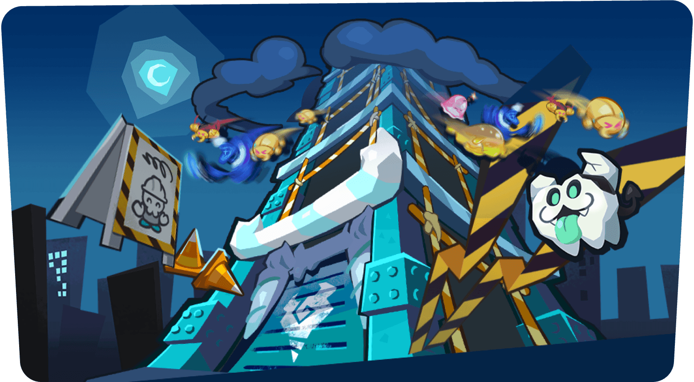

쿠키런 크럼블 티어표 직접 매겨봤어요, SSR조합 짜는 법까지 정리
쿠키런: 크럼블 굴리다 보면 다들 한 번쯤 부딪히는 게 있어요. 등급표만 보고 SSR이라 자신 있게 편성에 넣었는데, 막상 전투에서는 기대만큼 안 나오는 경우요. 저도 처음엔 희귀도 순으로만 편성했다가 몇 번 갈아엎고 나서야 감을 잡았는데요, 그래서 이번엔 제가 직접 플레이하며 매긴 성능 기준 티어표(S~D)를 공개하고, 그 위에 조합을 실전으로 짜는 순서까지 정리해볼게요. 미리 말씀드리면 이건 공식 발표가 아니라 제가 직접 해보고 매긴 제 기준 순위예요.
제가 매긴 쿠키런 크럼블 티어표, 이렇게 보시면 돼요
이 티어표는 희귀도가 아니라 실전에서 체감한 성능 순서대로 S부터 D까지 나눈 거예요. 위에서부터 S·A·B·C·D 순으로 내려가고, 같은 칸 안에서는 따로 순위를 매기지 않았어요 — 그 안에서는 다 고만고만하다고 보시면 돼요.

제가 직접 플레이하며 매긴 쿠키런: 크럼블 성능 티어표예요(S~D).
공식 티어 랭킹이 아니라 제가 2026년 8월 초 기준으로 직접 플레이하며 매긴 개인 기준이에요. 표 이미지에는 쿠키 이름만 있어서, 희귀도(C~TSSR)는 본문에서 따로 적어뒀어요.
표를 보면서 바로 이상하다 싶은 지점이 몇 군데 보이실 텐데요, 그 얘기를 다음 섹션에서 풀어볼게요.
SSR인데 C, TSSR인데 B — 왜 이렇게 갈리나요
등급이 높다고 티어도 높은 건 아니에요. 제가 직접 굴려보니 실제론 이 세 가지가 성능을 갈랐어요 — 스킬이 실전에서 얼마나 자주 제 몫을 하는지, 혼자서도 버티는 생존력, 그리고 팀에 시너지를 얼마나 잘 태워주는지요.
- 트위즐젤리맛·슈크림맛·에스프레소맛·찰스는 전부 SSR인데 C예요. 등급은 높은데 제 기준으론 활용도가 그만큼 안 느껴지더라고요.
- 마카롱맛은 SR인데 A랍니다. 지원 포지션에서 제공하는 시너지가 실전에서 자주 맞물려서 체감 성능이 확 올라가요.
- 호밀맛은 SR인데 S고, 반대로 오븐방랑자는 최고 희귀도인 TSSR인데 B에 머무르네요. 희귀도가 성능을 보장하지 않는다는 걸 제일 잘 보여주는 두 사례예요.

오븐방랑자 공식 일러스트예요. 최고 희귀도 TSSR인데 제 티어표에선 B에 머물러요.
이미지 출처: 쿠키런: 크럼블 공식 사이트 · 네이버 본문엔 받아서 재업로드 권장
그러니 편성할 때는 본문에 적어둔 희귀도보다 이 티어표 위치를 먼저 보시는 게 맞아요.
조합은 포지션·속성·시너지 이 세 가지로 굴러가요
쿠키런 크럼블 조합은 포지션·속성·시너지 이 세 가지 조합으로 굴러가요. 포지션은 방어·돌격·사격·지원, 속성은 불·물·풀·빛·어둠이에요.
| 포지션 | 하는 일 | 예시(속성) |
|---|---|---|
| 사격 | 원거리에서 딜 담당, 체감상 딜 비중 제일 큼 | 전갈맛(불)·바람궁수(풀) |
| 돌격 | 근접까지 파고들어 딜, 생존기도 겸함 | 피겨여왕맛(물)·오븐방랑자(불) |
| 방어 | 어그로 끌고 앞에서 버팀 | 이온맛 쿠키로봇(물)·다크초코(어둠) |
| 지원 | 버프·디버프·회복 담당 | 도넛행성 에일리언 도넛킹(빛)·마카롱맛(풀) |
포지션·속성은 팬 소스 두 곳을 교차 확인한 내용이라 공식 발표는 아니에요. 정확히 4종으로 나뉘는지도 소스마다 조금씩 갈려서, 지금까지 확인된 선에서 정리한 거예요.
여기서 제일 많이들 착각하는 게 시너지예요. 같은 속성끼리 모은다고, 같은 시리즈끼리 모은다고 시너지가 터지는 게 아니에요. 쿠키마다 "주는 시너지" 태그랑 "받는 시너지" 태그가 따로 고정돼 있고, 팀 안에서 이 둘이 맞물릴 때만 발동해요. 시너지 종류는 관통·연쇄·다발·탄속·연타·범위·지속 이렇게 일곱 가지고요. 각각 뭘 하는 태그인지 표로 정리해봤어요.
| 시너지 | 효과 |
|---|---|
| 관통 | 더 많은 적을 꿰뚫어요 |
| 연쇄 | 한 번 더 튀어서 발동해요 |
| 다발 | 동시에 나가는 탄 수가 늘어요 |
| 탄속 | 발사체 속도가 빨라져요 |
| 연타 | 더 자주 연속으로 발동해요 |
| 범위 | 공격 사거리가 늘어요 |
| 지속 | 효과 지속시간이 늘어요 |
그래서 티어표 위쪽 쿠키만 모아도 태그가 하나도 안 맞물리면, 오히려 티어 낮은 조합보다 실전에서 부진할 수 있어요.

아레나 모드를 소개하는 공식 아트예요. 조합 시너지가 실제로 맞붙는 콘텐츠예요.
이미지 출처: 쿠키런: 크럼블 공식 사이트 · 네이버 본문엔 받아서 재업로드 권장
SSR 조합, 실전에서는 이 순서로 짜요
SSR 조합은 등급 높은 순서로 채우는 게 아니라, 정해진 네 단계 순서로 짜야 실전에서 제대로 굴러갑니다.
- 포지션 균형부터 잡아주세요 — 방어·사격·지원 이 세 자리를 먼저 채워주시면 됩니다.
- 보유 쿠키가 주는 시너지 태그를 쭉 나열해보세요.
- 그 태그를 받는 쿠키를 포지션당 최소 한 명은 확보해주시면 됩니다.
- 남는 자리는 콘텐츠 성격에 맞춰 채워주세요 — 보스전 위주면 방어를 더 넣는 식으로요.

크럼블 던전 모드를 소개하는 공식 아트예요. 보유 로스터로 직접 도전하는 콘텐츠예요.
이미지 출처: 쿠키런: 크럼블 공식 사이트 · 네이버 본문엔 받아서 재업로드 권장
가끔 특수 기믹이 걸린 스테이지도 나오는데, 이럴 땐 늘 쓰던 조합 대신 그 기믹 조건에 맞는 쿠키들로 따로 챙겨서 편성해야 하더라고요.

임플란트 타워를 소개하는 공식 아트예요. 이런 특수 기믹 콘텐츠는 조합을 따로 챙겨야 해요.
이미지 출처: 쿠키런: 크럼블 공식 사이트 · 네이버 본문엔 받아서 재업로드 권장
등급 좋은 쿠키를 일단 다 넣고 보는 것보다, 이 순서를 한 번씩 짚고 넘어가는 게 훨씬 안정적이더라고요.
초보 때 저도 했던 편성 실수들
초보 편성 실수는 크게 이 다섯 가지로 갈려요. 저도 이 실수들을 거의 다 겪어봤어요.
| 실수 | 왜 손해인가 |
|---|---|
| 방어 없이 사격 2명 이상 편성 | 버티는 역할이 없어서 순식간에 무너져요 |
| 시너지 무시하고 등급만 보고 편성 | 태그가 안 맞물리면 SSR을 넣어도 시너지가 안 터져요 |
| 뽑기를 여러 계열에 분산 | 어느 한 계열도 제대로 못 채워서 계속 애매해요 |
| 강화 재화를 로스터 전체에 흩뿌림 | 핵심 몇 명만 확실히 키우는 게 훨씬 나아요 |
| 전투력 숫자만 보고 시너지 설명 안 읽음 | 숫자가 높아도 태그가 안 맞으면 제 몫을 못해요 |
이런 실수 피하고 싶으면 팬이 만든 크럼블헬퍼(crumblehelper.com, 비공식)에 보유 쿠키를 넣어보세요. 시너지 최다 조합을 계산해주고, 로스터 전체 69종 도감도 같이 볼 수 있어요.
자주 묻는 질문
Q. 초반 덱은 뭐로 짜야 하나요?
초반엔 보유 폭이 좁으니까 등급보다 포지션 채우기가 먼저예요. 방어 하나, 사격이나 돌격 중 딜 담당 하나, 지원 하나만 채워도 훨씬 안정적이고요, 그 안에서 시너지 태그가 맞는 조합이 있으면 우선순위를 올리시면 돼요.
Q. 속성끼리 상성이 있나요?
공식 사이트랑 헬프센터, 주요 팬 데이터베이스까지 찾아봤는데 속성 상성표는 아직 확인되지 않았어요. 지금 기준으로 확실한 건 포지션 균형이랑 시너지 태그 매칭이니까, 조합은 이 두 가지 위주로 짜시는 걸 추천드려요.
쿠키런 크럼블 티어·조합 정리
직접 해보고 내린 결론은 하나예요. 등급보다 포지션 균형 먼저 잡고, 그 안에서 태그 맞는 쿠키로 채우는 게 결과가 훨씬 좋았어요. 크럼블 이제 막 시작하셨거나 조합 갈아엎을 타이밍이시면, 이 순서 한 번 그대로 따라가면서 달려보시길 추천드려요.
✔ 쿠키런 크럼블 같이 보기 좋은 내용
· 쿠키런 크럼블 등급표 총정리! 초반엔 뭐부터 키워야 할까 (발행 시 링크 연결)
· 쿠키런크럼블 스텔라링크 뭔지 별조각 잠금 타이밍 계산기까지 정리 (발행 시 링크 연결)
· 쿠키런 크럼블 7월 30일 출시 확정! 사전등록 180만 보상 총정리 (발행 시 링크 연결)
참고한 곳
· 쿠키런: 크럼블 공식 사이트
· 인벤 프리뷰
· Pocket Gamer
· 크럼블헬퍼(비공식)